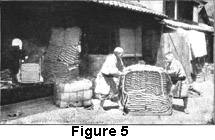

1922—Millinery
by Charlotte Rankin Aiken, B.A.
Chapter V—MACHINE-MADE STRAW HATS
Development of Industry
The word "manufacture" is applied to the making of hats whether by hand or by machine, but having considered typical methods of making hats and braids by hand, we shall now take up the methods of making and treating hats in factories.
Factory hat manufacture is a development of the last century, and the number, extent, and variety of hat factories, not only in the United States, but throughout the civilized world, are surprisingly large. A hat factory is a most interesting and instructive place to visit, especially if one knows beforehand something about the processes and the reasons for them.
Location of Factories
In general, the countries which produce the most raw material for hats are those which have the greatest number of factories, except the small countries like the Philippines, where the population is not yet industrial but mainly agricultural. All large countries which are industrially developed manufacture hats, and thus, although the United States produces almost no raw material for hats except cotton, wool, and fur, it has many hat factories.
Very few machine-stitched braid hats are imported; most hats of this sort are made here from imported braids.
Different Kinds of Factories
The modern hat factory has many specialized departments and a highly organized staff of employees. There are various types of factories and establishments connected directly with the hat industry. They may be classified as follows:
- Foreign houses that receive braids and body hats and ship them after putting them through the finishing processes of dyeing, bleaching, and blocking. Such houses flourish in ports of China, Japan, and other countries that export large quantities of hats. There are many in the United States.
- Factories that make up braids into hats and occasionally handle imported body hats. These buy almost exclusively from importers of braids and body hats in the rough.
- Felt, pile fabric, and silk hat factories, which may or may not be associated with the straw factories.
- Millinery shops and factories, including department store workrooms, where untrimmed hats are trimmed, hats are made of braid by hand on wire, buckram, or net frames, imported models copied, etc.
- Importers and manufacturers of flowers, foliage, feathers, trimmings, ornaments, novelties, ribbons, silk goods, maline, etc.
- Manufacturers of hat frames, hat linings, bandeaux, etc.
- Manufacturers of dye, finishes, lacquers, glue, cement, sizing, varnish, dies, plaster blocks, sewing machines, etc., for use in hat factories.
- A description of the second class of factories will include the methods of the first class.
Receiving the Braids
The braids, which are received in bales or cases (see Figure 5), generally come in pieces 60 yards in length, weighing one-fourth of a pound. Manufacturers often order 10,000 pieces at once. Tagal braid from Japan comes 25 pieces of 80 yards each to a bundle, and 1,000 pieces to a box. Chinese braid is tied up into pieces 60 or 120 yards long, with 240 pieces to the bale. The larger manufacturers employ "graders" to separate the grades of braid into several classes. The contents of each bale vary in quality, some finer and some coarser, and in width. The value is set according to quality. This careful standardization makes uniform prices for material of one quality, and one customer or retailer cannot complain that his shipment of hats is inferior to another at the same price.
Sewing the Braid into Hats
The manufacturers generally make up hats in quantity only as orders are received. Large factories with sufficient capital to risk, sometimes make up what is known as "floor" goods, anticipating the demand for a few shapes. Each operator works on one special model, and is usually given enough braid to make at least four dozen of the desired type of hat. The hats are shaped from a plaster block which is given to the operator, and changed whenever a new shape is wanted. Sometimes manufacturers make hats up ahead of time, copying and modifying imported models, but more often they are behind or just even with their orders.
The operators work in a large, light room on power sewing machines of a special make, that sew either by lock or chain stitch. The plaster blocks by which the operators shape the hats have been molded by plasterers in another part of the factory into the exact shapes desired. These shapes are generally either copies of imported models or adaptations of them, as imported styles are apt to be too extreme for the American taste. The operator wets the braid and sews with great rapidity and deftness. It is interesting to know that the sewers receive more per yard for sewing by machine than the woman received for plaiting the braid by hand in distant China.
Sizing
The sewed hats are then taken to the sizing room, where they are dipped into a kind of starch to stiffen them. The luster and stiffness of the finished hat depend very largely upon the kind of sizing used.
Blocking
The hats are dried on shelves placed one above another in the drying room and are then passed to the blocking department, where they are fitted upon hot metal blocks exactly similar in shape to the plaster blocks which guided the sewing of the braid. The blocks are placed in presses or stampers, which work by hydraulic pressure. Hydraulic presses are used for hats requiring a smooth finish, and stem machines for hats that are to have a rough effect. The hydraulic pressure is 75 to 100 pounds, much less than is used on a felt hat, where it is often 500 pounds. This operation presses the hats into the shape of the metal die, which when it is made of zinc spelter averages 110 pounds in weight.
Additional Blocking
An additional process is applied to more expensive grades of hats, which necessitates more expense, more workers and consequently raises the price of the hat. After the hats are taken from the presses they are put on other blocks on a hot table, which is usually of steel, about thirty feet long and four or five feet wide, and is heated from underneath by gas or steam. This assures a perfectly formed hat.
Finishing
The hats are then ready for ticketing and lining.
The crowns and brims of certain hats are made separately and then sewn together. Finer grades and Panamas are blocked by hand; wooden blocks, which rest on the hot table, are sometimes used.
Sewed Braids
In recent years narrow braids have been used to a great extent. There are, however, many millinery concerns which make hand-sewed hats of wide braids; such as those of artificial silk, ramie, open work hair, and lace Tuscan. To supply the demand of these shops for wide braids and at the same time to meet the requirements of fashion, the straw factories produce bolts of braid which give an effect of three, four, or five rows of narrow braid.